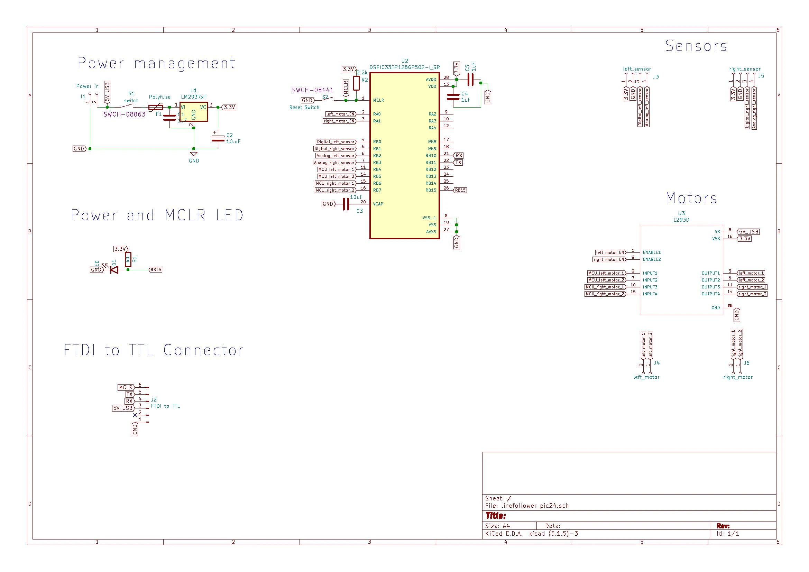
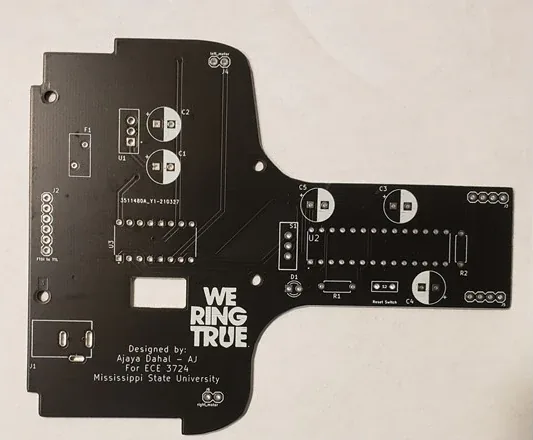
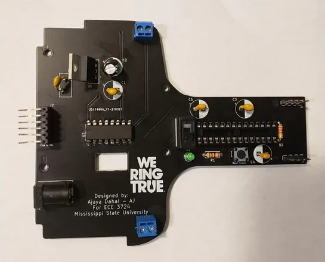
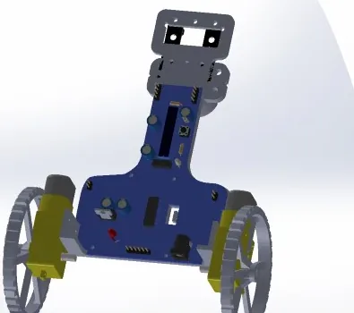

Spring 2021 · ECE 3724, Mississippi State University
Line Follower Robot, from 3D Model to PCB
A two-sensor line follower built around a Microchip dsPIC33EP128GP502 on a board I designed for ECE 3724. I modelled the chassis in SolidWorks, 3D printed it, and generated the motor PWM from timer interrupts.

At a glance
- MCU
- Microchip dsPIC33EP128GP502 (28-pin DIP), from the course kit
- Firmware
- C in MPLAB X, using the
pic24_all.hsupport library - Motor driver
- L293D dual H-bridge, two DC gear motors on a 9 V supply
- Sensors
- Two TCRT5000 IR reflective modules, read as digital inputs
- Board
- Custom PCB designed in KiCad, with an LM2937 regulator, FTDI serial header, reset button and status LED
- Chassis
- Modelled in SolidWorks, 3D printed
How it steers
The two sensors sit side by side at the front, one on each side of the line. Each module outputs 3.3 V over white and 0 V over black, so every pass of the main loop is a two-bit lookup:
| Sensor A | Sensor B | Action |
|---|---|---|
| White | White | Line is between the sensors: drive forward |
| White | Black | Turn left |
| Black | White | Turn right |
| Black | Black | Reverse (placeholder that still drives forward) |
A turn stops one wheel and keeps the other one driving.
Motor PWM from two timers
The GP variant of the dsPIC33 has no motor-control PWM module, so I generated PWM in software. Each motor's L293D enable pin is toggled by its own timer interrupt: Timer2 for the left motor and Timer3 for the right. The ISR alternates the timer period between 300 µs (enable high) and 700 µs (enable low), which gives a 1 kHz PWM at 30 % duty and runs the motors from the 9 V supply at reduced speed.
//create PWM for left motor
void createPWM_Left(void){
//700+300 = 1000us = 1ms results in 1KHz PWM with 30% duty cycle.
if (MOTOR_1_EN == 1) {
PR2 = usToU16Ticks(700, getTimerPrescale(T2CONbits)) - 1;
MOTOR_1_EN = 0;
} else {
PR2 = usToU16Ticks(300, getTimerPrescale(T2CONbits)) - 1;
MOTOR_1_EN = 1;
}
}
// Interrupt Service Routine for Timer2 which is for LEFT motor
void _ISR _T2Interrupt(void) {
createPWM_Left();
_T2IF = 0;
}The full source, including the sensor and timer setup, is in the original code download.
Board and chassis
The board carries the regulator, the dsPIC33, the L293D, an FTDI header for serial, a reset button and screw terminals for the motors. Select an image to enlarge it.




Bill of materials
| Part | Notes | Cost |
|---|---|---|
| Custom PCB | Designed for this project | $15.90 |
| Gear motors | DC gear motors | $11.99 |
| L293D motor driver | Dual H-bridge | $7.99 |
| TCRT5000 IR sensors | Reflective sensor modules | $8.98 |
| dsPIC33EP128GP502 and support parts | From the course kit | $0.00 |
| Chassis | 3D printed | $0.00 |
| Total | $44.86 | |
Demo

What I would change
- Read the sensors as analog values instead of thresholded bits.
- Replace the if/else steering with a proportional (then PI) controller that sets each motor's duty cycle from the left/right sensor difference.
- Move from two sensors to a five-sensor IR array.